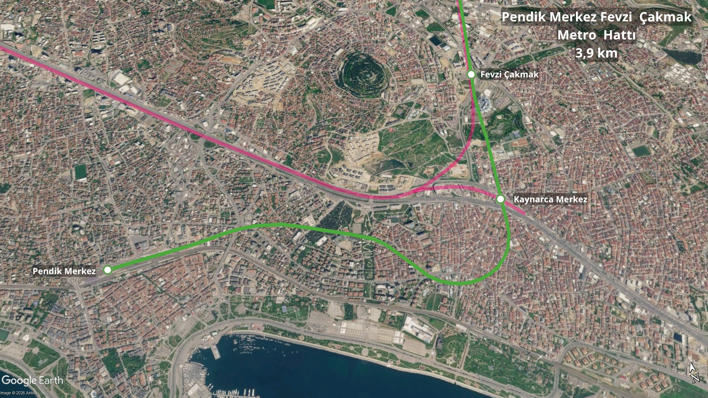

İnşa Halindeki Raylı Sistem Hatları
İstanbul Anadolu Yakası'nda yapımı devam eden metro hatları.
 M4B Tavşantepe - Kaynarca Merkez Metro Hattı Uzatması
M4B Tavşantepe - Kaynarca Merkez Metro Hattı Uzatması
Sinyalizasyon: Thales SelTrac (GoA2, ATO, ATP)
Uzunluk: 1,2 km
İstasyon Sayısı: 1 (Kaynarca Merkez)
Fiziki İlerleme: %87,5
Yüklenici: Özgün İnşaat Taahhüt San. ve Tic. A.Ş.
Açılış Hedefi: 2027
Tren Marka Model: Bozankaya (100 Vagon)
M4B Tavşantepe - Kaynarca Merkez Metro Hattı Uzatması, Kadıköy - Sabiha Gökçen Havalimanı metro hattının Tuzla yönündeki uzatmasının 1. etabını oluşturmaktadır. Tavşantepe İstasyonu'ndan başlayan ve 1,2 kilometre uzunluğunda tek istasyonlu (Kaynarca Merkez) bir hat olan proje, M4 hattını Kaynarca Merkez üzerinden M10 hattı ile entegre hale getirmektedir.

Proje Geçmişi ve Evrimi
Tavşantepe - Tuzla uzatmasının ilk ihalesi Mart 2017'de gerçekleştirilmiş, ihaleyi Cengiz İnşaat ve Alsim Alarko ortaklığı 1.613.815.000 TL bedelle kazanmıştır. 14 Nisan 2017'de sözleşmesi imzalanıp çalışmalara başlanan proje, finansman eksikliği gerekçesiyle 29 Aralık 2017 tarihli yazı ile 2018 başında durdurulmuştur. Kasım 2019'da sağlanan 86 Milyon Euro tutarındaki kredi ve Aralık 2020'deki 34 Milyon Euro tutarındaki Eurobond finansmanı ile projeler revize edilerek Ekim 2020'de inşaat yeniden başlatılmıştır.
Süreç devam ederken yüklenici firma Haziran 2022'de yasal haklarından yararlanarak sözleşmeyi feshetmiştir. Pendik Merkez - Fevzi Çakmak kesimiyle birleştirilerek 14 Eylül 2022'de tekrarlanan ikinci ihaleyi 2.896.691.029,14 TL bedelle Özgün İnşaat kazanmış ve Ekim 2022'de sahadaki çalışmalara geçilmiştir. Ekim 2023'te Kaynarca Merkez İstasyonu'ndaki kazı çalışmaları tamamlanmış; Eylül 2023 itibarıyla demiryolu 1. faz ve yürüme yolu imalatlarına başlanmıştır.
Etap Açılış Planları
• 2027: Tavşantepe – Kaynarca Merkez kesiminin hizmete açılması hedeflenmektedir.
Altyapı ve Teknik Özellikler
M4 ana hattı ile teknik standartları aynı olan yapıda 1500V DC rijit katener sistemi ve Thales SelTrac sinyalizasyon altyapısı kullanılmıştır. Peron boyutları 180 metre uzunluğunda tasarlanmış olup, hat işletmede maksimum 80 km/sa hıza uygun olarak 4 vagonlu 100 Bozankaya tren setiyle hizmet verecektir.
Entegrasyonlar
• Kaynarca Merkez İstasyonu: M10 Pendik Merkez - Sabiha Gökçen Havalimanı Metro Hattı ile entegrasyon.
 M10 Pendik Merkez - Sabiha Gökçen Hvl. Metro Hattı
M10 Pendik Merkez - Sabiha Gökçen Hvl. Metro Hattı
Sinyalizasyon: Thales SelTrac (GoA2, ATO, ATP)
Uzunluk: 5,1 km (Pendik Merkez - Fevzi Çakmak: 3,9 km / Tavşantepe - Kaynarca Merkez: 1,2 km)
İstasyon Sayısı: 3 (Fevzi Çakmak hariç 2 + Tavşantepe hariç 1)
Fiziki İlerleme: %87,5
Yüklenici: Özgün İnşaat Taahhüt San. ve Tic. A.Ş.
Tren Marka Model: Bozankaya (100 Vagon)
M10 Pendik Merkez - Sabiha Gökçen Havalimanı Metro Hattı, İstanbul'un Anadolu Yakası'nda hizmet veren M4 hattının bir uzatmasıdır. Pendik İstasyonu'ndan başlayan hat Kaynarca Merkez, Fevzi Çakmak ve Kurtköy alanlarından geçerek Sabiha Gökçen Havalimanı'nda son bulmaktadır. Tamamlandığında Fevzi Çakmak İstasyonu'ndan itibaren Ulaştırma ve Altyapı Bakanlığı tarafından inşa edilen Sabiha Gökçen Havalimanı kesimini kullanacak olan hattın amacı, YHT yolcularını doğrudan havalimanına ulaştırmaktır. Sefer süresi 11 dakika olarak planlanmıştır.

Proje Geçmişi ve Evrimi
Hattın ihalesi Tuzla kesimi ile birlikte Mart 2017'de gerçekleştirilmiş, ihaleyi Cengiz İnşaat ve Alsim Alarko ortaklığı 1.613.815.000 TL bedelle kazanmıştır. 14 Nisan 2017'de sözleşmesi imzalanıp çalışmalara başlanan proje, finansman eksikliği gerekçesiyle 29 Aralık 2017 tarihli yazı ile 2018 başında durdurulmuştur. Kasım 2019'da sağlanan 86 Milyon Euro tutarındaki kredi ve Aralık 2020'deki 34 Milyon Euro tutarındaki Eurobond finansmanı ile projeler revize edilerek Ekim 2020'de inşaat yeniden başlatılmıştır.
Süreç devam ederken yüklenici firma Haziran 2022'de o dönem çıkan Cumhurbaşkanlığı kararnamesinden yararlanarak sözleşmeyi feshetmiştir. Tavşantepe - Kaynarca Merkez kesimiyle birleştirilerek 14 Eylül 2022'de tekrarlanan ikinci ihaleyi 2.896.691.029,14 TL bedelle Özgün İnşaat kazanmış ve Ekim 2022'de sahadaki çalışmalara geçilmiştir. Haziran 2023'te Pendik Merkez İstasyonu'ndaki arkeolojik kazılar, Ekim 2023'te ise Kaynarca Merkez İstasyonu'ndaki kazı çalışmaları tamamlanmış; Eylül 2023 itibarıyla demiryolu ve yürüme yolu imalatlarına başlanmıştır.
Etap Açılış Planları
• 2027: Pendik Merkez – Fevzi Çakmak ve Tavşantepe – Kaynarca Merkez kesimlerinin hizmete açılması hedeflenmektedir.
Altyapı ve Teknik Özellikler
M4 hattı ile aynı teknik standartlara sahip olan hatta 1 tünel ve 1 aç-kapa istasyon yapısı yer almaktadır. 1500V DC rijit katener sistemi ve Thales SelTrac sinyalizasyon altyapısı tercih edilmiştir. Peron boyutları 180 metre uzunluğunda tasarlanmış olup, hat işletmede maksimum 80 km/sa hıza uygun olarak 4 vagonlu 100 Bozankaya tren setiyle hizmet verecek şekilde planlanmıştır.
 M12 Ümraniye - Ataşehir - Göztepe Metro Hattı
M12 Ümraniye - Ataşehir - Göztepe Metro Hattı
Sinyalizasyon: Bombardier Cityflo 650 (GoA4, UTO)
Uzunluk: 13 km
İstasyon Sayısı: 11
Fiziki İlerleme: %97
Yüklenici: Gülermak-Nurol-Makyol ortaklığı
Tren Marka Model: Hyundai Rotem (40 vagon)
M12 (60. Yıl Parkı – Kâzım Karabekir) Metro Hattı, İstanbul'un Anadolu Yakası'nda 60. Yıl Parkı ile Kâzım Karabekir arasında hizmet verecek 13 kilometre uzunluğunda ve 11 istasyonlu sürücüsüz metro hattıdır. İstanbul Büyükşehir Belediyesi tarafından inşa edilen hat, M7 ve M8 hatlarında da kullanılan Hyundai Rotem marka sürücüsüz metro araçlarıyla işletilecektir. 4 vagonlu trenlere göre tasarlanan hatta ayrıca M8 hattına bağlanan 900 metre uzunluğunda bir bağlantı tüneli ve Finans Merkezi İstasyonu sonrasında 1 kilometre uzunluğunda iki geceleme tüneli bulunmaktadır.

Proje Geçmişi ve Evrimi
M12 Ümraniye – Ataşehir – Göztepe Metro Hattı'nın ihale ilanı 11 Ağustos 2016 tarihinde 2.182.165.754,30 TL yaklaşık maliyet üzerinden yapılmış, yaklaşık yedi ay süren değerlendirme sürecinin ardından 12 Mart 2017 tarihinde ihale sonuçlandırılmıştır. İhaleyi 2.469.924.400 TL teklif veren Gülermak Ağır Sanayi – Nurol İnşaat ortak girişimi kazanmış ve aynı yıl içerisinde hattın inşaat çalışmalarına başlanmıştır.
2018 yılının ortalarından itibaren ödenek yetersizliği ve kredi temin edilememesi nedeniyle hattın inşaat çalışmaları tamamen durdurulmuştur. 2019 yerel seçimlerinin ardından hattın yeniden finansmanı için çalışmalar başlatılmış ve Eylül 2019'da Avrupa İmar ve Kalkınma Bankası'ndan (EBRD) 97,5 milyon avro kredi sağlanmıştır. 20 Eylül 2019 tarihinde düzenlenen törenle hattın inşaat çalışmaları yeniden başlatılmıştır.
İnşaatın yeniden başlamasının ardından Finans Merkezi İstasyonu'ndan ikisi kuzey, ikisi güney yönünde olmak üzere toplam dört TBM ile tünel kazılarına başlanmıştır. 18 Eylül 2021 tarihinde TBM'lerden ikisi aynı anda Sahrayıcedit ve Çarşı istasyonlarına ulaşmıştır. 14 Ekim 2022 tarihinde Avrupa İmar ve Kalkınma Bankası tarafından hat için 75 milyon avro tutarında ek kredi sağlanmıştır.
16 Haziran 2023 tarihinde Site İstasyonu'nda hattın ilk ray kaynağı gerçekleştirilmiştir. Ardından ray serimi ve katener çalışmalarına devam edilmiştir. 9 Mart 2024 tarihinde Ataşehir – Finans Merkezi istasyonları arasında hattın ilk test sürüşü gerçekleştirilmiş, 14 Mart 2024 tarihinde ise ikinci bir test sürüşü yapılmıştır. Test sürüşlerinde M8 hattından bağlantı tüneli aracılığıyla getirilen araçlar kullanılmıştır.
11 Eylül 2024 tarihinde Sakarya'da Eurotem tarafından üretilen M12 hattı tren setlerine ait ilk görüntüler paylaşılmıştır. 29 Mart 2024 tarihinde hattın 2025 yılının mayıs ayında açılması planlandığı açıklanmış, 4 Ekim 2024 tarihinde ise hattın 2025 yılının ekim-kasım aylarında hizmete alınmasının planlandığı belirtilmiştir. Aynı açıklamada ray serimlerinin %60 oranında tamamlandığı ve hatta hizmet verecek 40 vagondan ilkinin 2025 yılının ilk çeyreğinde raya indirileceği ifade edilmiştir.
18 Aralık 2024 tarihinde, 2025 yılının mayıs ayı itibarıyla ana hat tünellerindeki tüm imalatların tamamlanmasının ve haziran ayında hat boyunca test sürüşlerinin başlamasının planlandığı açıklanmıştır.
 M13 Yenidoğan - Emek Metro Hattı
M13 Yenidoğan - Emek Metro Hattı
Fiziki İlerleme: %8
Yüklenici: Doğuş İnş.
Açılış Hedefi: 2029
Yenidoğan ve çevresindeki yerleşim bölgelerini ana raylı sistem hatlarına bağlamak amacıyla projelendirilen M13 metro hattında, durdurulan inşaat çalışmaları finansman sağlanmasıyla 10 Mart 2024 tarihinde yeniden başlatılmıştır.

 M14 Altunizade - Bosna Bulvarı Metro Hattı
M14 Altunizade - Bosna Bulvarı Metro Hattı
Uzunluk: 4,5 km
Fiziki İlerleme: %85
Yüklenici: Güryapı–Fernas–Çelikler
Açılış Hedefi: 2027 İlk Çeyrek
M14 (Altunizade – Bosna Bulvarı) Metro Hattı, İstanbul'un Anadolu Yakası'nda Üsküdar bölgesindeki yerleşimleri ve Çamlıca Tepesi aksını ana ulaşım ağlarına bağlamak amacıyla inşa edilen 4,5 kilometre uzunluğunda ve 4 istasyonlu metro hattıdır. Ulaştırma ve Altyapı Bakanlığı tarafından yapımı üstlenilen proje, Altunizade'den başlayarak Ferah Mahallesi ve Çamlıca Camii duraklarından geçip Bosna Bulvarı'nda son bulmaktadır. 2 vagonlu tren setleriyle 8,5 dakikalık sefer süresine sahiptir.